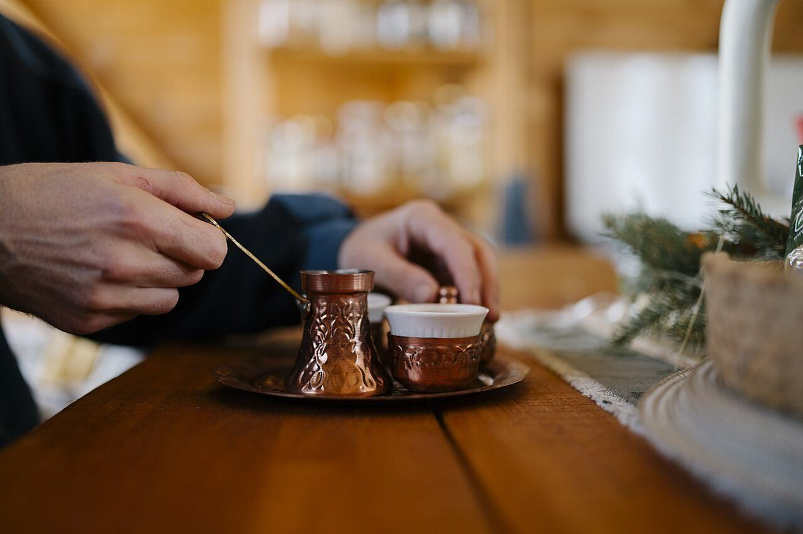
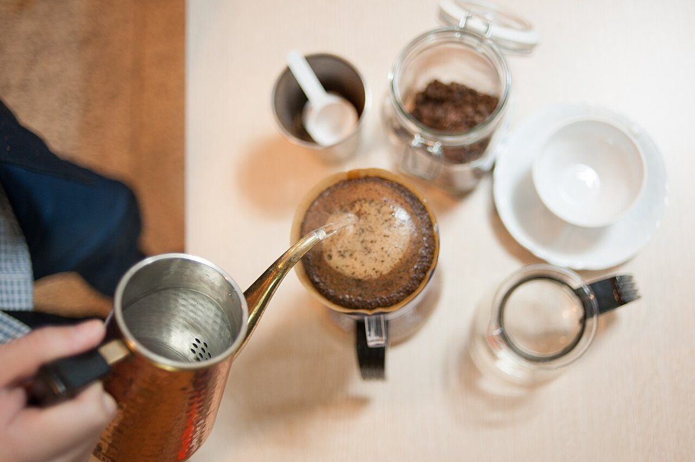
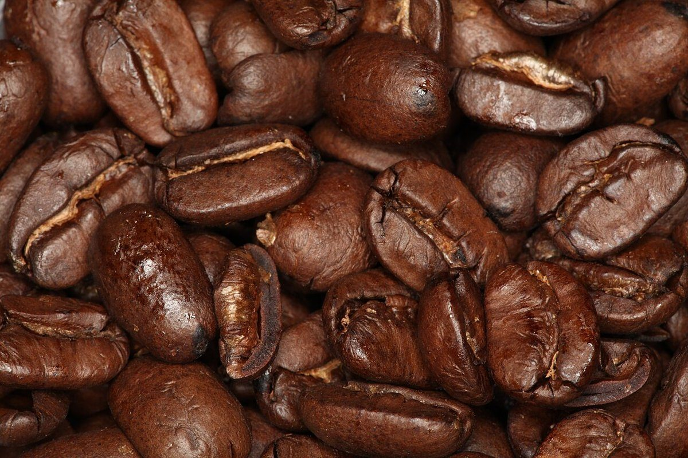
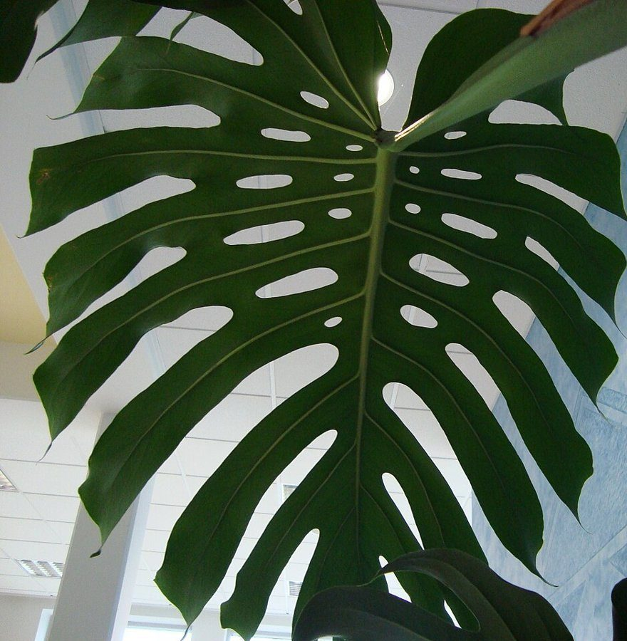
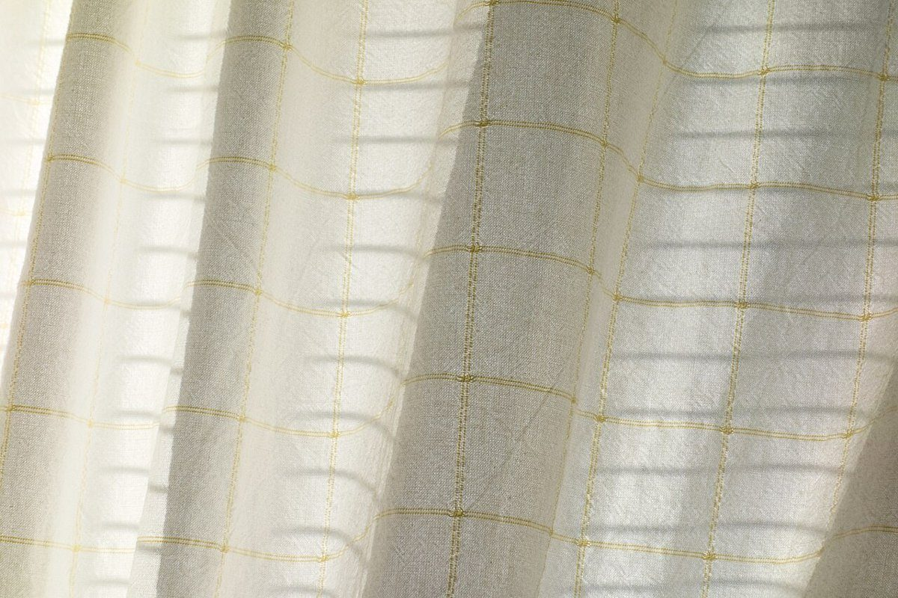

制作側の仮案
ひと息の時間を、ここで。
営業時間・メニューなどの詳細は準備中です。お気軽にお問い合わせください。
cafeあおりんは、奈良県大和高田市藤森のカフェです。


もくじ
ひと息のイメージ
掲載する写真のイメージです。お店の実際の様子ではありません。






お問い合わせ
営業時間などは準備中です。お出かけ前にお問い合わせください。
制作側の仮案
営業時間・メニューなどの詳細は準備中です。お気軽にお問い合わせください。
cafeあおりんは、奈良県大和高田市藤森のカフェです。

掲載する写真のイメージです。お店の実際の様子ではありません。




営業時間などは準備中です。お出かけ前にお問い合わせください。